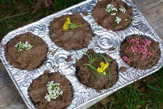

Marvelous Mudpies
Back to Home

Every Kidchef's Favorite
The mudpie is usually one of the first dishes that children
will learn and master. Many will discount it as easy and only for beginners,
but the mud pie is deceiving. Yes, it will be great when done
simply, but the extensions and additions are endless, allowing even
the most skilled kidchefs to be challenged and to show off their skills.
Ingredients
- Gutter Water
- Dirt from Garden
- Fine Gravel
- Grass Clumps with Dirt Attached
- Misc Flowers
- Small Sticks
- Berries
Steps
- Place small pile of dirt on sidewalk
- Grab cup of water from the gutter and pour over dirt on sidewalk
- Use a stick to stir the dirt and water until it forms mud
- Sprinkle gravel over the mud and stir in with the stick
- Smash the grass clumps into the mud, breaking up the clump and spreading the grass thruout the mud
- Pickup a handfull of mud and begin patting it into a flat pie shape (a pattycake)
- Place the newly formed pie on a dry section of sidewalk
- Repeat until all of the mud has been used. The number of pies varies based on the amount of dirt used
- Decorate the tops of the pies with flowers and berries. Place sticks in the pies for a more 3 dimensional look
- Show your friends and family and offer them a taste!